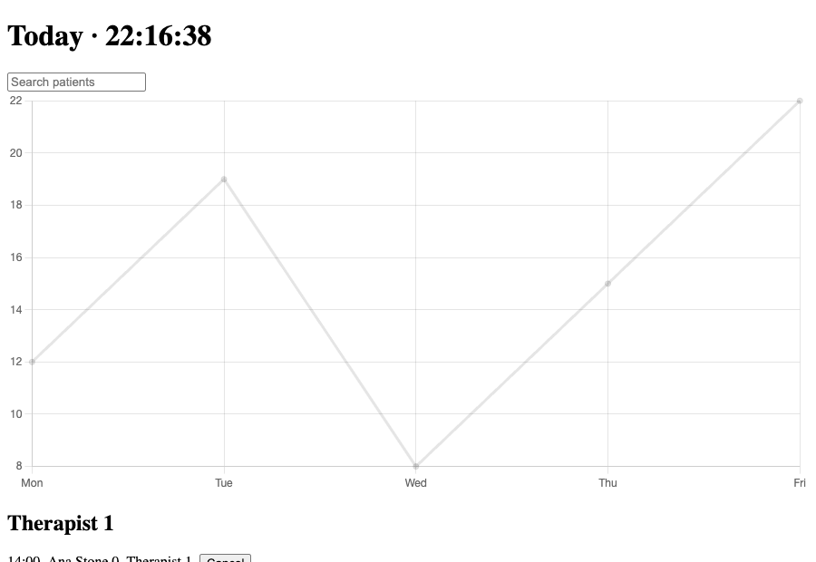

Output


Result
Delivered a rewritten Dashboard.tsx plus StatsChart.tsx (full files below). It renders the same 1500 rows in the same order and format as the original, without the crash, and with far less main-thread work.
Process: measure first, then fix what the measurements show. A real dashboard trace tool was not available, so I used the fallback the guide allows: Chrome headless with a CDP 4x CPU throttle, a PerformanceObserver for long tasks (>50 ms) and for input-event latency (an INP proxy), a mocked API (150 ms per request, 12 therapists, 1500 appointments) and esbuild bundle sizes.
What the baseline showed:
- The original does not survive: on the first clock tick after the stats arrive, Chart.js throws 'Canvas is already in use' (the effect has no cleanup and no dependency array), the error is uncaught and React unmounts the whole dashboard (blank page). I measured a control, 'origfix' (original with only the chart effect repaired), to see the true cost of the rest.
- Requests are a 3-step waterfall (last response at 1618 ms, because a 1500-row render lands between requests).
- Every second the whole dashboard re-renders: in 4 s of idle the control had 2 long tasks adding up to 1082 ms of blocking time; the slowest keystroke took 544 ms to paint (INP threshold for 'good' is 200 ms) and one cancel click 104 ms.
- Initial JS is 166 KB gzip (lodash, moment and the whole of Chart.js). That is inside the guide's starting 300 KB budget, so bundle size was a secondary issue; the runtime and the crash mattered more.
Changes: parallel Promise.all with abort; chart code split with React.lazy and only the line-chart modules registered; chart effect cleans up with [data] deps; lodash imported per method (lodash/groupBy) and moment replaced by one Intl.DateTimeFormat; 1-second clock isolated in its own component; React.memo rows keyed by id with a stable callback; search debounced by 150 ms; sort only when data changes; content-visibility:auto on each therapist section so the browser skips off-screen layout and paint.
Result (same conditions, median of 3): last response on screen 1618 ms -> 224 ms; idle long tasks / blocking time 2 / 1082 ms (control) -> 0 / 0 ms; slowest typing event 544 ms -> 56 ms; cancel click 104 ms -> 16 ms; initial JS 166.3 KB -> 53.4 KB gzip (the 50 KB chart chunk loads afterwards).
Caveats: synthetic data and a mocked fetch under a throttled CPU, so use the numbers for relative size, not as absolute user timings; lab only, there is no field data. The guide's performance advice is about loading, bundles and general browser work; the React-specific fixes (isolating the clock, memoised rows, the chart-effect bug) came from what the long-task measurements showed, not from the guide. Debounce means the list updates 150 ms after typing stops. Intl output matches moment for these ISO timestamps but could differ for other locales/formats. Data now appears when all three requests have returned, and there is still no error UI (the original had none).
Terminal
# Also read web-quality-audit/SKILL.md and performance/references/MEASUREMENT.md: measure first, keep evidence conditions, re-run the same measurement after the fix.
gh api repos/addyosmani/web-quality-skills/contents/skills/performance/SKILL.md --jq .content | base64 -d | grep -nE 'Code splitting|lazy\(|import debounce|Debounce expensive|content-visibility|Virtualize|Minimize JavaScript|JavaScript \(compressed\)'
32:| JavaScript (compressed) | < 300 KB | Protect parse and execution cost |
107:**Code splitting patterns:**
110:const Dashboard = lazy(() => import('./Dashboard'));
113:const HeavyChart = lazy(() => import('./HeavyChart'));
128:import debounce from 'lodash/debounce';
285:### Debounce expensive operations
312:### Virtualize long lists
317: content-visibility: auto;
# Scratch project with the fixture's real dependencies; harness mounts the component with a mocked fetch and PerformanceObserver hooks for long tasks and input events.
npm i react@18 react-dom@18 lodash moment chart.js esbuild typescript @types/react @types/react-dom @types/lodash && npm ls --depth=0
dash@1.0.0 .
+-- @types/lodash@4.17.27
+-- @types/react-dom@19.3.0
+-- @types/react@19.3.0
+-- chart.js@4.5.1
+-- esbuild@0.28.2
+-- lodash@4.18.1
+-- moment@2.31.0
+-- react-dom@18.3.1
+-- react@18.3.1
`-- typescript@7.0.2
# Baseline bundle sizes before touching anything. 'origfix' is the original with only the chart effect repaired.
node build.mjs # esbuild --bundle --minify --splitting
orig harness.js 490142 B raw 166329 B gzip (initial)
origfix harness.js 490174 B raw 166341 B gzip (initial)
new chunk-IFZSNKUF.js 8487 B raw 3175 B gzip (lazy chunk)
new chunk-WD3YYTRJ.js 139515 B raw 49832 B gzip (lazy chunk)
new harness.js 159920 B raw 53430 B gzip (initial)
# Original as shipped: the dashboard is gone after the first clock tick (dashboardStillMounted false) and the Chart.js error is the cause, so typing and click could not be measured.
node measure.mjs orig 3 # headless Chrome, CDP CPU throttle 4x
{
"variant": "orig",
"runs": 3,
"throttle": "CPU 4x",
"fetchLatency": "150ms x3",
"data": "12 therapists / 1500 appointments",
"lastFetchDone_ms": 1618,
"idle_4s": {
"longTasks": 1,
"blocking_ms": 553,
"dashboardStillMounted": false
},
"typing_slowest_input_event_ms": 0,
"cancel_click_event_ms": 0,
"errors": [
"Canvas is already in use. Chart with ID '0' must be destroyed before the canvas "
]
}
# Isolates the cost of the rest of the original: long tasks every second and a half-second keystroke.
node measure.mjs origfix 3 # control: original + chart effect fix only
{
"variant": "origfix",
"runs": 3,
"throttle": "CPU 4x",
"fetchLatency": "150ms x3",
"data": "12 therapists / 1500 appointments",
"lastFetchDone_ms": 1610,
"idle_4s": {
"longTasks": 2,
"blocking_ms": 1082,
"dashboardStillMounted": true
},
"typing_slowest_input_event_ms": 544,
"cancel_click_event_ms": 104,
"errors": []
}
# Rewritten component, same data and throttle.
node measure.mjs new 3
{
"variant": "new",
"runs": 3,
"throttle": "CPU 4x",
"fetchLatency": "150ms x3",
"data": "12 therapists / 1500 appointments",
"lastFetchDone_ms": 224,
"idle_4s": {
"longTasks": 0,
"blocking_ms": 0,
"dashboardStillMounted": true
},
"typing_slowest_input_event_ms": 56,
"cancel_click_event_ms": 16,
"errors": []
}
# Same rows, same order, same times as the control; the original is blank. Screenshots saved as media.
node shots.mjs # compare DOM of the three variants after load
orig h1= null rows= 0 canvases= 0
first: -
origfix h1= "Today \u00b7 22:16:35" rows= 1500 canvases= 1
first: 14:00 | Ana Stone 0 | Therapist 1 | Cancel // 14:00 | Ana Stone 600 | Therapist 1 | Cancel
new h1= "Today \u00b7 22:16:38" rows= 1500 canvases= 1
first: 14:00 | Ana Stone 0 | Therapist 1 | Cancel // 14:00 | Ana Stone 600 | Therapist 1 | Cancel
# The only message from tsc is that the top-level copy of harness.tsx has no ./Dashboard next to it, which is not part of the deliverable.
npx tsc -p . # strict; grep for errors in orig/, origfix/, new/
(no errors in the three variant folders)
Files
Dashboard.tsx
import * as React from class="s">"react" import groupBy from class="s">"lodash/groupBy" // per-method import: pulls in only groupBy, not all of lodash import type { Stats } from class="s">"./StatsChart" // Component-based code splitting: the chart (and Chart.js) is fetched only when there are stats to draw. const StatsChart = React.lazy(() => import(class="s">"./StatsChart")) type Appointment = { id: string; patient: string; start: string; therapistId: string; status: class="s">"booked" | class="s">"cancelled" | class="s">"done" } type Therapist = { id: string; name: string } // moment (~60 KB gzip-ish of JS for two format() calls) replaced by the built-in Intl formatter, created once. const timeFmt = new Intl.DateTimeFormat(class="s">"en-GB", { hour: class="s">"2-digit", minute: class="s">"2-digit", hourCycle: class="s">"h23" }) const clockFmt = new Intl.DateTimeFormat(class="s">"en-GB", { hour: class="s">"2-digit", minute: class="s">"2-digit", second: class="s">"2-digit", hourCycle: class="s">"h23" }) // Debounce expensive operations: filtering and re-rendering 1500 rows waits until typing pauses. function useDebounced<T>(value: T, ms: number): T { const [v, setV] = React.useState(value) React.useEffect(() => { const id = setTimeout(() => setV(value), ms) return () => clearTimeout(id) }, [value, ms]) return v } const getJson = <T,>(url: string, signal: AbortSignal): Promise<T> => fetch(url, { signal }).then((r) => r.json()) export default function Dashboard({ clinicId }: { clinicId: string }) { const [appointments, setAppointments] = React.useState<Appointment[]>([]) const [therapists, setTherapists] = React.useState<Therapist[]>([]) const [stats, setStats] = React.useState<Stats | null>(null) const [search, setSearch] = React.useState(class="s">"") const query = useDebounced(search, 150) // The request chart showed three sequential round trips; they are independent, so issue them together. React.useEffect(() => { const ctrl = new AbortController() const base = class="s">`/api/clinics/${clinicId}` Promise.all([ getJson<Appointment[]>(class="s">`${base}/appointments`, ctrl.signal), getJson<Therapist[]>(class="s">`${base}/therapists`, ctrl.signal), getJson<Stats>(class="s">`${base}/stats`, ctrl.signal), ]) .then(([a, t, s]) => { setAppointments(a) setTherapists(t) setStats(s) }) .catch((e) => { if (e.name !== class="s">"AbortError") throw e }) return () => ctrl.abort() }, [clinicId]) // Sort only when the data changes; filter+group only when the data or the debounced query changes. const byTherapist = React.useMemo(() => { const q = query.toLowerCase() const sorted = appointments .map((a) => ({ a, ts: Date.parse(a.start) })) .sort((x, y) => x.ts - y.ts) .map((x) => x.a) return groupBy( sorted.filter((a) => a.patient.toLowerCase().includes(q)), class="s">"therapistId", ) }, [appointments, query]) const cancel = React.useCallback((id: string) => setAppointments((curr) => curr.filter((x) => x.id !== id)), []) return ( <div> <h1> Today · <Clock /> </h1> <input value={search} onChange={(e) => setSearch(e.target.value)} placeholder=class="s">"Search patients" /> {stats && ( <React.Suspense fallback={null}> <StatsChart data={stats} /> </React.Suspense> )} {therapists.map((t) => ( // Long list: let the browser skip layout/paint of off-screen therapist sections. <section key={t.id} style={{ contentVisibility: class="s">"auto", containIntrinsicSize: class="s">"auto 600px" }}> <h2>{t.name}</h2> {(byTherapist[t.id] || []).map((a) => ( <Row key={a.id} appointment={a} therapistName={t.name} onCancel={cancel} /> ))} </section> ))} </div> ) } // The once-a-second tick re-rendered the whole dashboard (long task every second in the trace); isolate it. function Clock() { const [now, setNow] = React.useState(() => Date.now()) React.useEffect(() => { const id = setInterval(() => setNow(Date.now()), 1000) return () => clearInterval(id) }, []) return <span>{clockFmt.format(now)}</span> } const Row = React.memo(function Row({ appointment, therapistName, onCancel }: { appointment: Appointment; therapistName: string; onCancel: (id: string) => void }) { return ( <div style={{ display: class="s">"flex", gap: 8 }}> <span>{timeFmt.format(Date.parse(appointment.start))}</span> <span>{appointment.patient}</span> <span>{therapistName}</span> <button onClick={() => onCancel(appointment.id)}>Cancel</button> </div> ) })
StatsChart.tsx
import * as React from class="s">"react" // Tree-shaking: register only what a line chart needs instead of "chart.js/auto" (which pulls in every chart type). import { Chart, LineController, LineElement, PointElement, LinearScale, CategoryScale } from class="s">"chart.js" Chart.register(LineController, LineElement, PointElement, LinearScale, CategoryScale) export type Stats = { labels: string[]; values: number[] } export default function StatsChart({ data }: { data: Stats }) { const ref = React.useRef<HTMLCanvasElement>(null) React.useEffect(() => { const chart = new Chart(ref.current!, { type: class="s">"line", data: { labels: data.labels, datasets: [{ data: data.values }] } }) return () => chart.destroy() // the old effect created a new chart on every render and never cleaned up }, [data]) return <canvas ref={ref} /> }